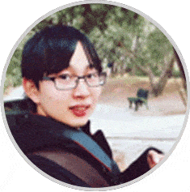

首页
业务范围
团队介绍
作品展示
团队介绍
Company profile
陆洋
创始人 / CEO
Lu Yang
本科毕业于清华大学，博士毕业于美国马里兰大学，前百度资深工程师，大数据专家，熟悉各类IT产品开发，精通人工智能领域算法，具有6年领导开发团队的经验。团队的总负责人。
王茜
联合创始人 / 首席设计师
Wang Xi
首席设计师，现在就读于清华大学美术学院,信息设计专业,有丰富的网页设计、app设计及视觉设计经验,曾为清华大学设计"云上小研"app,改革开放40周年校史馆展览设计;中国进口博览会中国馆设计等。
张宇
联合创始人
Zhang Yu
硕士毕业于清华大学软件学院，具有十年java开发经验的资深工程师。在并发处理,通信协议,架构设计等方面具有丰富经验，担任过近十个项目的技术总负责人,在国内外期刊发表过8篇专业领域的论文。

陈新明
技术骨干
Chenxin Ming
公司的技术骨干,具有5年python开发经验,精通web开发,数据库,爬虫等各个技术领域。技术控,喜欢钻研各类产品开发难题。
冯童童
技术骨干
Fengtong Tong
硕士毕业于清华大学软件学院，具有十年java开发经验的资深工程师。在并发处理,通信协议,架构设计等方面具有丰富经验，担任过近十个项目的技术总负责人,在国内外期刊发表过8篇专业领域的论文。